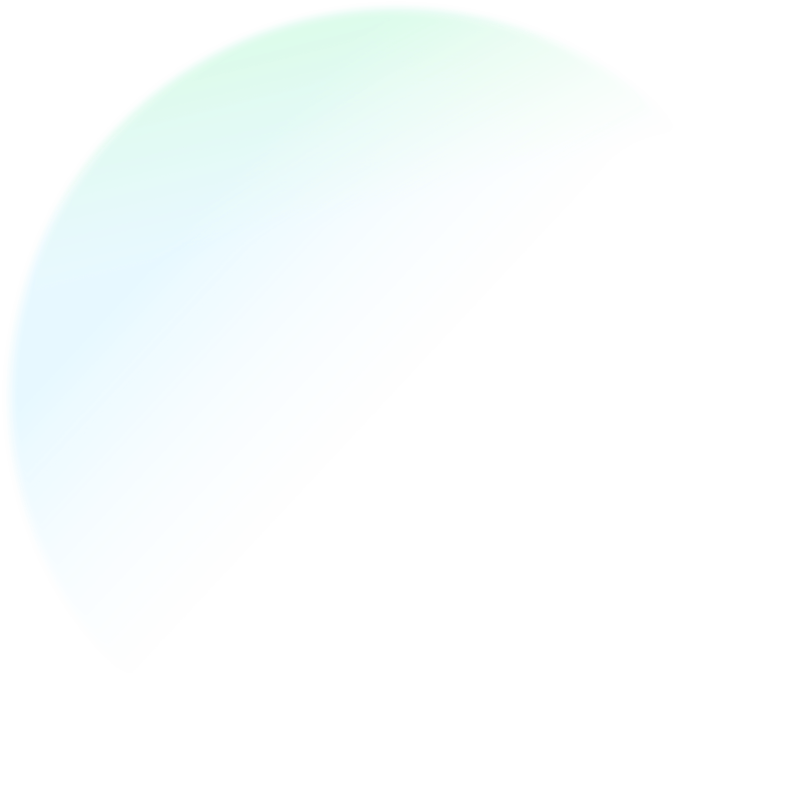
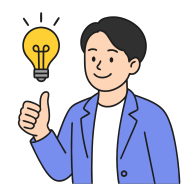

一起陪伴、探索
還有你那些未完成的夢
自由工作很美，也很難。
我們用 1 對 1 陪伴，陪你從第一步開始，直到夢想變成日常。


他們已經踏上職旅
聽聽他們的故事
每一段職涯轉型都有獨特挑戰，這些曾經與你有相同疑惑的夥伴，現在正過著他們嚮往的生活
為什麼？
選擇職旅 WorkWay

我們的顧問都是親身走過這條路的專家，不是紙上談兵的理論家。你所學到的每一個建議，都是經過無數次嘗試與錯誤後萃取的精華。
實戰經驗
從心態調整到實際操作，從品牌建立到財務規劃，我們提供你轉型路上需要的每一塊拼圖，讓不確定感不再阻礙你的決定。
全方位支持
加入職旅不只是獲得諮詢，更是連結到一群志同道合的夥伴。在這裡，你的疑惑有人解答，你的成就有人分享，你的旅程不再孤單。
社群力量
不是套模板的建議，而是為你量身打造的陪伴！

遇見你的職涯夥伴
每位顧問都有獨特專長，更重要的是：
“ 他們都曾面對你正在經歷的挑戰 ”
職旅 WorkWay 匯集了來自不同領域、擁有豐富實戰經驗的自由工作者與數位遊牧專家。我們的顧問不只教授理論，更分享親身經歷的挑戰與解決之道。
我們相信，最好的指導來自於那些已經走過你想走的路，並願意伸出手拉你一把的人。
服務流程
簡單四步，踏上你的職旅
\ Q&A /
你可能有些困惑...

{{faq.q}}
{{faq.question}}
{{ qaActiveItem === faq.id ? 'keyboard_arrow_down' : 'chevron_left' }}{{faq.a}}
{{faq.and}}
邁向你真正想過的生活，從這裡開始
第一次諮詢只要 30 分鐘，可能改變你未來 30 年的生活方式